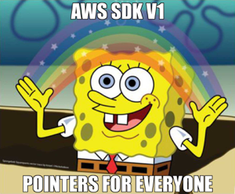

The source code for this repo is located here:
This is a quick overview of some AWS SDK Go work, but not a detailed tutorial.
I'd love feedback from more experienced Go devs as well.
Feel free to submit a PR with tweaks or suggestions, or just comment at the bottom (which is a GitHub issue powered comment system anyway).
Good metrics can help drive change. If you identify metrics that help you quantify areas of progress in your DevOps process, you'll have a chance to show the progress made and chart the wins.
Knowing the age of the image underlying your instances could be useful if you wanted to measure how often instances were being built and rebuilt.
I'm a big fan of making instances as immutable as possible, with less reliance on changes applied by configuration management and build oriented pipelines, and more baked into the image itself.
Even if you don't build everything into your image and are just doing "golden images", you'll still benefit from seeing the average age of images used go down.
This would represent more continual rebuilds of your infrastructure.
Containerization removes a lot of these concerns, but not everyone is in a place to go straight to containerization for all deployments yet.
I decided this would be a good chance to use Go as the task is relatively simple and I already know how I'd accomplish this in PowerShell.
If you are also on this journey, maybe you'll find this detail inspiring to help you get some practical application in Go.
There are a few steps that would be required:
- Connection & Authorization
- Obtain a List of Images
- Filtering required
- Obtain List of Instances
- Match Images to Instances where possible
- Produce artifact in file form
Warning... I discovered that the SDK is pretty noisy and probably makes things a bit tougher than just plain idiomatic Go.
If you want to learn pointers and derefrencing with Go... you'll be a pro by the time you are done with it 😂

I think this is a pretty great small metric oriented collector focus as it ties in with several areas worth future versions.
Since the overall logic is simple there's less need to focus on understanding AWS and more on leveraging different Go features.
- Version 1: MVP that just products a JSON artifact
- Version 2: Wrap up in lambda collector and product s3 artifact
- Version 3: Persist metrics to Cloudwatch instead as a metric
- Version 4: Datadog or Telegraf plugin
From the initial iteration I'll post, there's quite a bit of room for even basic improvement that my quick and dirty solution didn't implement.
- Use channels to run parallel sessions to collect multi-region metrics in less time
- Use sorting with the structs properly would probably cut down on overhead and execution time dramatically.
- Timeseries metrics output for Cloudwatch, Datadog, or Telegraf
- Still learning Go. Posting this up and welcome any pull requests or comments (comments will open GitHubub issue automatically).
- There is no proper isolation of functions and tests applied. I've determined it's better to produce and get some volume under my belt that focus on immediately making everything best practices.
Once I've gotten more familiar with Go proper structure, removing logic from
main() and more will be important.
- This is not a complete walkthrough of all concepts, more a few things I found interesting along the way.
Writing to JSON is pretty straight forward, but what I found interesting was handling null values.
If you don't want the default initialized value from the data type to be populated, then you need to specific additional attributes in your struct to let it know how to properly serialize the data.
For instance, I didn't want to populate a null value for AmiAge as 0 would mess up any averages you were trying to calculate.
type ReportAmiAging struct {
Region string `json:"region"`
InstanceID string `json:"instance-id"`
AmiID string `json:"image-id"`
ImageName *string `json:"image-name,omitempty"`
PlatformDetails *string `json:"platform-details,omitempty"`
InstanceCreateDate *time.Time `json:"instance-create-date"`
AmiCreateDate *time.Time `json:"ami-create-date,omitempty"`
AmiAgeDays *int `json:"ami-age-days,omitempty"`
}
In this case, I just set omitempty and it would set to null if I passed in a pointer to the value. For a much more detailed walk-through of this: Go's Emit Empty Explained
Here things got a little confusing as I wanted to run this concurrently, but shelved that for v1 to deliver results more quickly.
To initialize a new session, I provided my starting point.
sess, err := session.NewSession(&aws.Config{
Region: aws.String("eu-west-1"),
},
)
if err != nil {
log.Err(err)
}
log.Info().Str("region", string(*sess.Config.Region)).Msg("initialized new session successfully")
Next, I had to gather all the regions.
In my scenario, I wanted to add flexibility to ignore regions that were not opted into, to allow less regions to be covered when this setting was correctly used in AWS.
// Create EC2 service client
client := ec2.New(sess)
regions, err := client.DescribeRegions(&ec2.DescribeRegionsInput{
AllRegions: aws.Bool(true), Filters: []*ec2.Filter{
{
Name: aws.String("opt-in-status"),
Values: []*string{aws.String("opted-in"), aws.String("opt-in-not-required")},
},
},
},
)
if err != nil {
log.Err(err).Msg("Failed to parse regions")
os.Exit(1)
}
The filter syntax is pretty ugly.
Due to the way the SDK works, you can't just pass in *[]string{"opted-in","opt-in-not-required} and then reference this.
Instead, you have to set the AWS functions to create pointers to the strings and then dereference.
Deep diving into this further was beyond my time allotted, but made my first usage feel somewhat clunky.
After gathering the regions you'd iterate and create a new session per region similar to this.
for _, region := range regions.Regions {
log.Info().Str("region", *region.RegionName).Msg("--> processing region")
client := ec2.New(sess, &aws.Config{Region: *®ion.RegionName})
// Do your magic
}
I've blogged about this before (mostly on microblog).
As a newer gopher, I've found that zerolog is pretty intuitive.
Structured logging is really important to being able to use log tools and get more value out of your logs in the future, so I personally like the idea of starting with them from the beginning.
Here you could see how you can provide name value pairs, along with the message.
log.Info().Int("result_count", len(respInstances.Reservations)).Dur("duration", time.Since(start)).Msg("\tresults returned for ec2instances")
Using this provided some nice readable console feedback, along with values that a tool like Datadog's log parser could turn into values you could easily make metrics from.
From my prior blog post Filtering Results In Go I also talked about this.
The lack of syntactic sugar in Go means this seemed much more verbose than I was expecting.
A few key things I observed here were:
- Important to set your default layout for time if you want any consistency.
- Sorting algorithms, or even just basic sorting, would likely reduce the overall cost of a search like this (I'm better pretty dramatically)
- Pointers. Everywhere. Coming from a dynamic scripting language like PowerShell/Python, this is a different paradigm.
I'm used to isolated functions which have less focus on passing values to modify directly (by value).
In .NET you can pass in variables by reference, which is similar in concept, but it's not something I found a lot of use for in scripting.
I can see the massive benefits when at scale though, as avoiding more memory grants by using existing memory allocations with pointers would be much more efficient. Just have to get used to it!
// GetMatchingImage will search the ami results for a matching id
func GetMatchingImage(imgs []*ec2.Image, search *string) (parsedTime time.Time, imageName string, platformDetails string, err error) {
layout := time.RFC3339 //"2006-01-02T15:04:05.000Z"
log.Debug().Msgf("\t\t\tsearching for: %s", *search)
// Look up the matching image
for _, i := range imgs {
log.Trace().Msgf("\t\t\t%s <--> %s", *i.ImageId, *search)
if strings.ToLower(*i.ImageId) == strings.ToLower(*search) {
log.Trace().Msgf("\t\t\t %s == %s", *i.ImageId, *search)
p, err := time.Parse(layout, *i.CreationDate)
if err != nil {
log.Err(err).Msg("\t\t\tfailed to parse date from image i.CreationDate")
}
log.Debug().Str("i.CreationDate", *i.CreationDate).Str("parsedTime", p.String()).Msg("\t\t\tami-create-date result")
return p, *i.Name, *i.PlatformDetails, nil
// break
}
}
return parsedTime, "", "", errors.New("\t\t\tno matching ami found")
}
While this can be done in PowerShell, I rarely did it in the manner Go does.
amiCreateDate, ImageName, platformDetails, err := GetMatchingImage(respPrivateImages.Images, inst.ImageId)
if err != nil {
log.Err(err).Msg("failure to find ami")
}
As stated, feedback welcome from any more experienced Gophers would be welcome.
Anything for round 2.
Goals for that will be at a minimum:
- Use
go test to run.
- Isolate main and build basic tests for each function.
- Decide to wrap up in lambda or plugin.